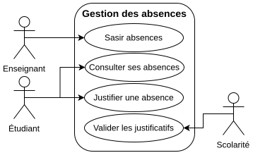
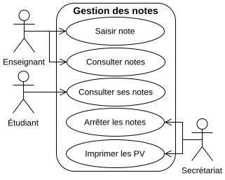
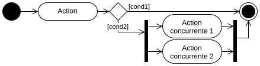
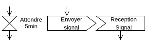
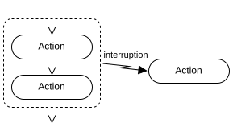
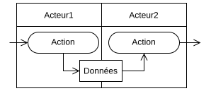
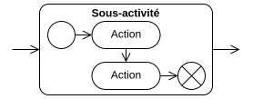

Différentes étapes d'un projet :
- Analyse : ce qu'on veut faire.
- Conception : comment faire.
- Implémentation : faire.
- Intégration et Déploiement :
- intégrer le nouveau code au projet.
- pousser en production.
- Maintenance : après la mise en production.
- corrections de bugs.
- ajouts de fonctionalités.
Autres étapes :
- Planification (cf Gestion de Projets).
- Tests (cf R4-01 Automatisations et Tests en Programmation).
Analyse :
- cadrer le projet : éviter de partir dans tous les sens, ou dans la mauvaise direction.
- échanger avec le client, ses besoins, contraintes (⚠ envies ≠ besoins).
- contractualiser via un cahier des charges.
- YAGNI (You ain't gonna need it) : ne pas anticiper d'hypothétiques besoins futurs.
- coût (temps, ressources), complexifie le code et la conception.
- attendre que le besoin se matérialise.
- MVP (Minimum Viable Product) : ensemble minimal des fonctionnalités nécessaires.
- Avoir un produit testable et exploitable le plus rapidement possible.
- Loi de Pareto : ~20% des fonctionnalités répondent à ~80% des usages.
- prioriser les besoins.
Maquettes, prototypes, ou preuves de concepts (PoC - Proof of Concept) :
- Simuler grossièrement le comportement ou l'interface graphique (e.g. slides).
- pour démontrer la faisabilité, et échanger avec le client avec des éléments plus tangibles.
UML est un langage de modélisation graphique.
- 14 types de diagrammes.
- pour réfléchir, communiquer, documenter, etc.
- death by UML fever : ne pas en abuser, tous les graphes ne sont pas toujours nécessaires.
À utiliser en fonction des ressources et contraintes :
- exercice de TP produit en 2 minutes.
- code critique d'une centrale nucléaire.
Pour des diagrammes complexes et/ou instables, les schémas sur papiers montrent vite leurs limites. On utilise alors des logiciels de dessins numériques.
Fonctionnalités de draw.io :
- Classiques : position, dimension, style, rotation, etc.
- Avancées :
- aligner et distribuer : facilite le positionnement.
- grouper et dissocier : pour créer des formes complexes (composition de plusieurs formes).
- formes personnalisées : définir et réutiliser ses propres bibliothèques de formes.
- Intégration Web :
- Couleurs adaptatives : mode clair/sombre.
- Édition en HTML/CSS : possibilité d'éditer ses formes en HTML/CSS.
- Animations : manipulations des formes (e.g. couches) en JS.
Le cahier des charges décrit les différentes fonctionnalités du projet, par le biais de cas d'utilisation.
Cas d'utilisation (use case) décrit, en langage non technique, un ensemble d'actions pour une finalité.
- e.g. interactions du système avec différents acteurs (≈ rôle assumé par une entité externe).
"Passer commande : l'utilisateur rempli son panier, puis le valide avant de procéder au payement. Si l'utilisateur n'est pas connecté, une authentification lui sera demandée lors de la validation du panier."
Une action utilisateur, e.g. ajouter un produit au panier n'est pas une finalité en soit.
Diagramme de cas d'utilisation : représente graphiquement et synthétiquement la liste des cas d'utilisation.
- Réfléchir aux différents acteurs et usages du système.

Peu utile si vous n'avez que peu de cas d'utilisation et d'acteurs.

Il existe aussi un lien équivalent à un avec condition. Cependant, je n'en recommande pas l'usage, car trop ambiguë (confusion avec l'héritage, et sens de la flèche trompeur).
Identifiez les acteurs et les cas d'utilisation de la situation suivante :
Le client souhaite un système permettant de gérer les absences des étudiants, qui pourront ensuite les justifier.

Il est important d'échanger avec le client afin d'identifier les besoins implicites.
Attention de ne pas se perdre dans des détails ne relevant pas des fonctionnalités essentielles du projet.
Identifiez les acteurs et les cas d'utilisation de la situation suivante :
Le client souhaite avoir une plateforme en ligne permettant la gestion des notes des étudiants. Les notes sont saisies par les enseignants, et peuvent être consultées par les étudiants. Ces notes sont ensuite utilisées lors du jury de fin d'année.

Il est important d'adopter le langage du client, d'où l'importance d'échanger avec lui afin de s'en approprier le vocabulaire.
Astuces :
- Indexer les cas d'utilisation, e.g. "1.2 Visualiser un produit", pour le retrouver dans le CdC.
- Utiliser des codes couleur, e.g. pour indiquer le niveau de priorisation (e.g. pour le MVP).
- Découper en sous diagrammes, e.g. par groupes d'acteurs ou de fonctionnalités, pour conserver des diagrammes lisibles et visuels.

Diagramme d'activité : décrit visuellement un cas d'utilisation, chaque noeud correspond à une action.
- expliciter le processus métier et son fonctionnement.

Une action est indépendante de l'interface graphique. Il ne faut ainsi pas mettre, i.e. "clic sur le bouton confirmer", mais "confirmation".




Dessinez le diagramme d'activité permettant de décrire le processus ci-dessous :
Vous êtes piéton et souhaitez traverser la rue.

Il y a toujours des éléments auxquels on le pense pas, d'où l'importance d'échanger avec le client. Notamment pour s'assurer de bien avoir compris le process métier.